從科研提取到精準靶向：不可複製的技術壁壘
在皮膚科學中，傳統保養品為了將水與油混合在同一個瓶子裡，往往依賴「化學界面活性劑（乳化劑）」。然而，強行破壞脂質結構的化學物質，長期使用會導致角質層受損、引發敏弱與慢性發炎。
突破傳統化學乳化劑的侷限。保養不應是繁瑣的疊加，而是根據環境與膚況，構築能被肌膚完全識別的仿生載體 (Biomimetic Carrier)。
我們堅持將提供水相浸潤通道的 [源] 與提供脂質重塑的 [潤] 分開。只有當您在掌心將兩者以 1:1 混合，並滴入高濃度靶向精華，利用體溫與物理性搓揉的瞬間，才會形成同時包覆親水性與親脂性活性成分的「微乳液 (Microemulsion)」。
這個瞬間生成的仿生載體，與人體天然的「皮脂膜」組成極度相似，能中和皮膚的防禦機制，保護脆弱的胜肽訊號不被降解，無阻礙地將高活性精華直送真皮層，實現 1+1+1 > 3 的臨床級生物利用率。
以 [源] AQUA (水相) 與 [潤] OLEA (油相) 1:1 構建完美仿生皮脂膜，瞬間柔軟角質。
依據 本公司 AI 檢測數據 提供參考 並可按個人 需求，滴入高純度 [丰]、[澤]、[炁]、[蘊] 活性精華。
利用掌心溫度的物理性摩擦，瞬間形成微乳液載體。
避開厚重化學乳化劑阻礙，使專利萃取成分使命必達直送肌底。
臻萃研的核心競爭力在於高階「精準萃取與轉化技術」。我們解決了醫美與化妝品產業長久以來的痛點：大分子無法吸收、高活性易致敏。確保每一滴成分皆具備極高純度、精準滲透與臨床級生物利用率。
定向酵素切割：突破吸收極限
傳統人參皂苷分子量龐大，塗抹僅能停留在表皮。臻萃研透過定向酵素水解技術，將大分子精準切割為極微小的 Compound K (CK)。我們達成了具備優異臨床有效性的黃金轉化率，建立極高仿製門檻：
天然蜂王漿極具營養價值，但巨量蛋白難以吸收且易引發過敏，是業界痛點。
🛡️ 專研水解去敏化：利用高倍數酵素切斷過敏原，極敏弱肌也能使用。
🚀 短鏈胜肽剪裁：巨量蛋白被精準剪裁為可輕易穿透脂質的極微分子胜肽。
皮脂膜同源脂質：沙棘果蘊含罕見的 Ω-7 (棕櫚油酸)，結構與原生皮脂高度重合，無縫接軌修護受損屏障。
水油雙相高利用率：同時具備親水性（維生素C、類黃酮）與親脂性（Ω-7）。
這是所有保養流程的起點，摒棄傳統增稠劑。由「源」提供水相浸潤通道，由「潤」提供油相雙層鎖水。
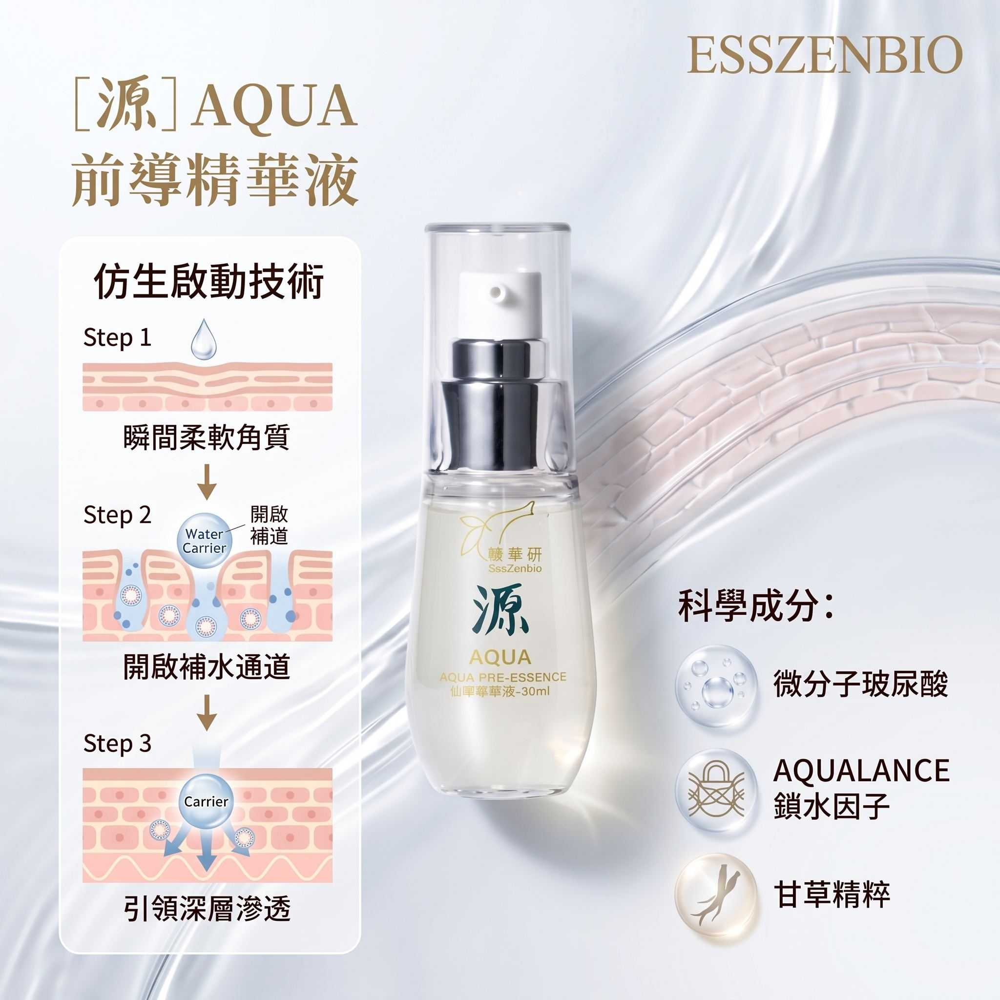
機制靶點：瞬間柔軟角質，開啟補水通道。作為高生物相容的水相載體，負責搭載後續水溶性成分引領深層滲透。
科學成分：微分子玻尿酸、AQUALANCE 鎖水因子、甘草精粹。
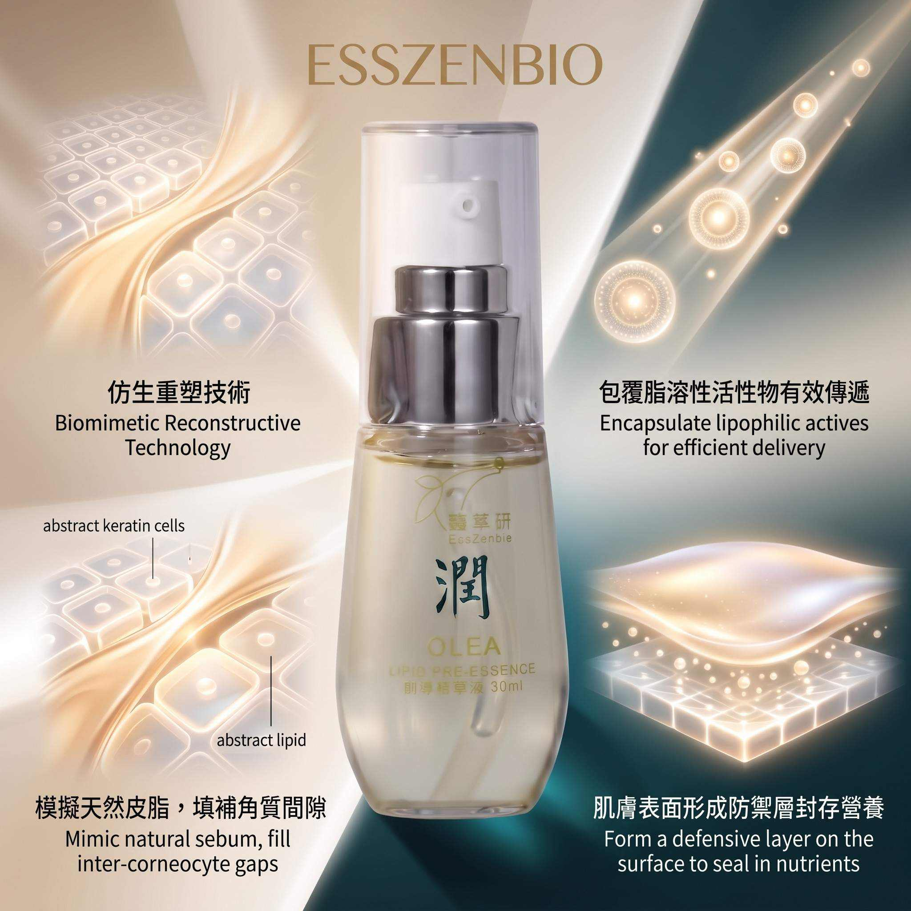
機制靶點：精準模擬天然皮脂，填補角質間隙。作為「油相載體」包覆脂溶性活性物，並在肌膚表面形成防禦層封存營養。
科學成分：原生橄欖油、神經醯胺 (Ceramides)。
核心基底：1:1 的仿生平衡 ✦ 模擬皮脂膜關鍵結構
依據 AI 檢測結果，在健康仿生基底上，加入特定純度極高的功效精華，發揮 1+1+1 > 3 的靶向修護加乘效果。
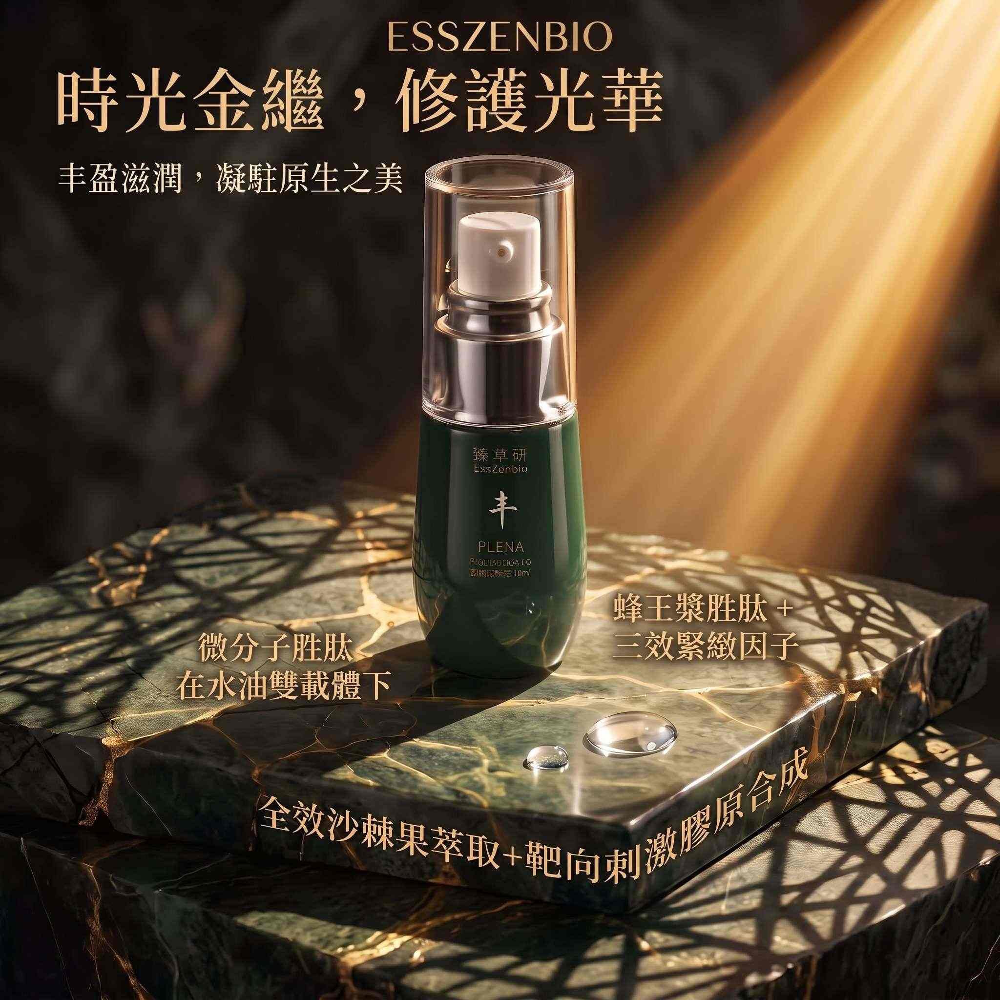
針對環境壓力與疲憊導致的屏障受損，進行深層結構性補給，強效改善發炎與暗沈。
精粹成分：蜂王漿水解胜肽、全效沙棘果萃取、三效緊緻修護因子。
獨家競爭力：利用極致溫和酵素切斷致敏醣基，解決敏感肌痛點。10-HDA 靶向刺激膠原合成。
乳化機制：微分子胜肽在水油雙載體的包覆下，精準消退疲憊炎症。
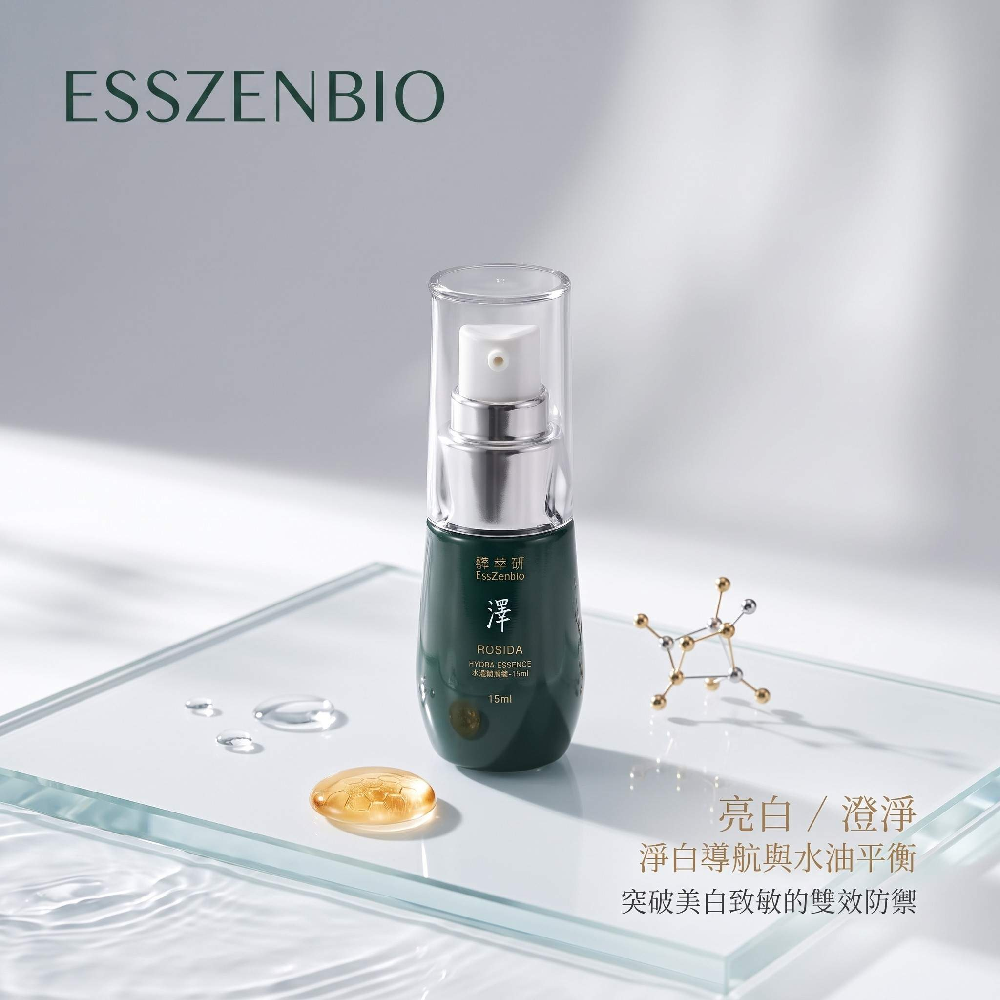
針對暗沈與屏障脆弱並存的亞洲膚況，提供「淨白+修護」不衝突的高效特調。
專利成分：傳明酸、水解蜂王漿微分子胜肽、水漾平衡因子。
獨家競爭力：微分子胜肽提供營養，在傳明酸阻斷黑色素的同時，同步進行細胞級修復。
乳化機制：與 [潤] 的神經醯胺結合修護角質層，使傳明酸溫和精準防禦暗沈。
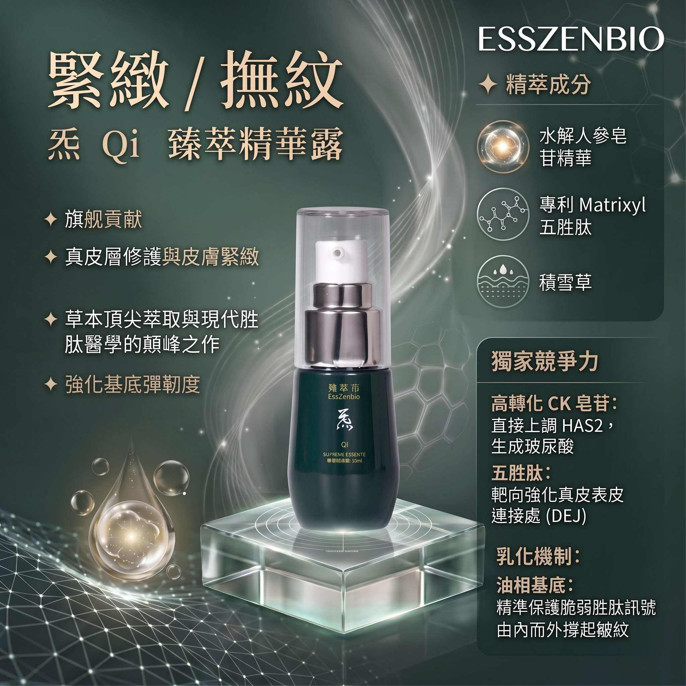
延緩熟齡老化、強化基底彈韌度，結合草本頂尖萃取與現代胜肽醫學的顛峰之作。
精萃成分：水解人參皂苷精華、專利 Matrixyl 五胜肽、積雪草。
獨家競爭力：高轉化 CK 皂苷直接上調 HAS2 生成玻尿酸。五胜肽靶向強化真皮表皮連接處 (DEJ)。
乳化機制：油相基底精準保護脆弱胜肽訊號，順利抵達真皮層，由內而外撐起皺紋。
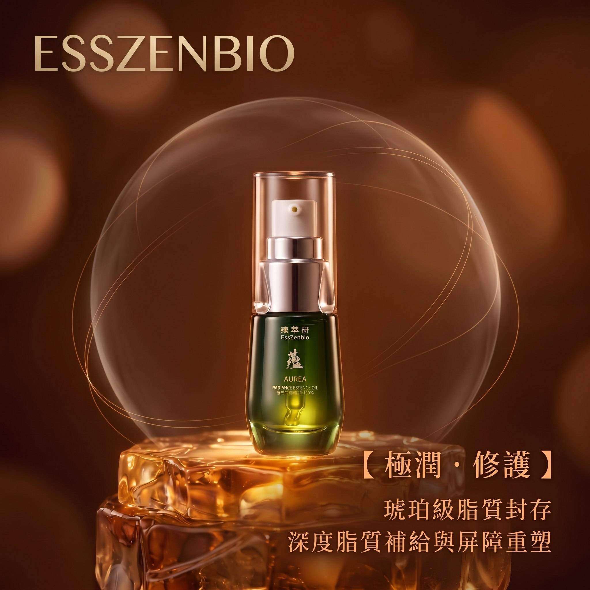
針對醫美術後、極乾與熟齡肌，提供最深層的結構性皮脂膜重建工程。
精萃成分：沙棘果油 (全果 Ω-7)、植物固醇 (Phytosterols)、神經醯胺。
獨家競爭力：神經醯胺抓水，植物固醇穩定雙層膜，Ω-7 提供抗老底物，完全模擬複合脂質。
乳化機制：與 [潤] 協同作用，在表皮形成微光屏障，完美封存脂質與水分。
摒棄化學增稠，根據 AI 演算建議，
將產品主導權交還給您，達成 1+1+1 > 3 的極致生物利用率。
依照 AI 報告於掌心倒入適量 [源] 與 [潤]，建立仿生載體。
滴入 AI 演算指定的高濃度靶向活性精華（如：[炁] 1滴）。
雙手合十搓揉，利用掌心溫度與物理性摩擦使油水瞬間微乳化。
輕壓於臉部，感受仿生載體保護下的活性胜肽無阻礙層層滲透。
近年科學研究指出，消化道微生態、內在情緒狀態與外在肌膚表現，存在著緊密的雙向溝通網絡。我們的日夜雙效配方，正是基於此「腸-腦-皮膚軸」的先進理念所設計。
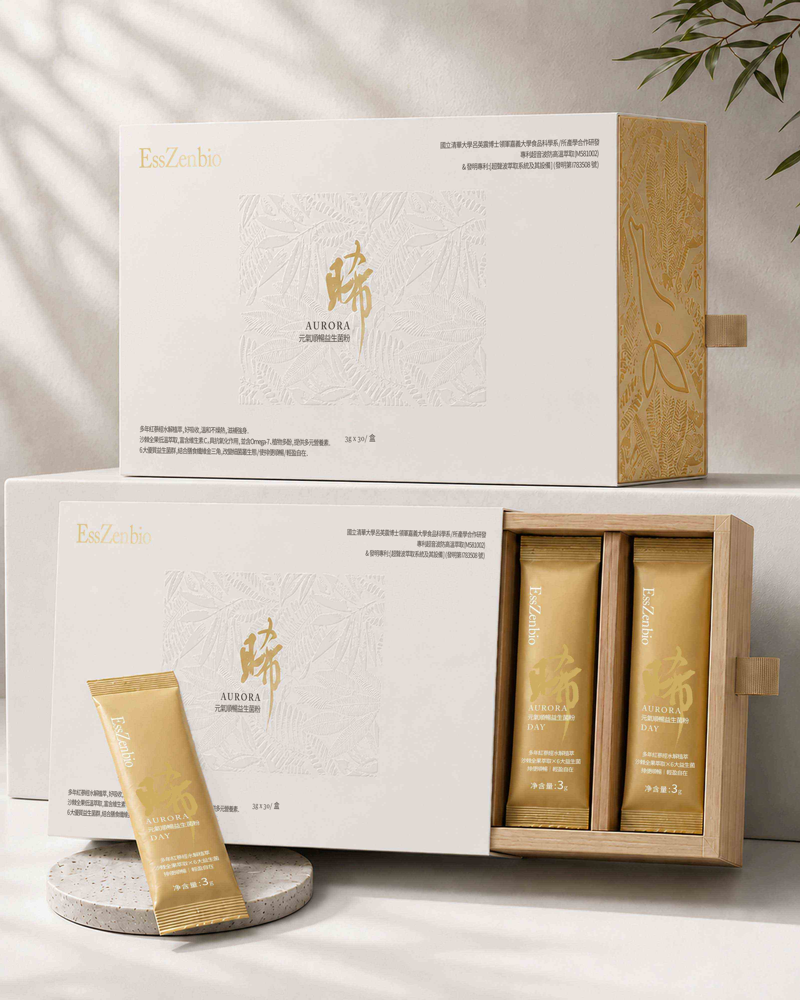
AURORA 日用配方透過人參與沙棘滋補強身；以洋車前子、難消化糊精與菊糖等膳食纖維促進腸道蠕動，使排便順暢；搭配消化酵素幫助消化；並藉由六大益生菌群改變細菌叢生態；最後佐以綜合維生素礦物質維持正常生理機能。達成幫助消化、精神旺盛、使排便順暢的日間全面保養。
精選5年紅蔘，透過低溫水解技術與益生菌的「生物轉化」協同作用，極致吸收珍貴皂苷CK，有助於滋補強身、增強體力。搭配珍貴極地沙棘果，全果低溫萃取完整保留天然維生素C與 Omega-7，促進新陳代謝，迎接活力早晨。
採用黃金比例水溶性膳食纖維（洋車前子殼）、難消化糊精與優質益生元（菊糖）完美協同。膳食纖維可促進腸道蠕動，增加飽足感，使糞便比較柔軟而易於排出，讓您每日輕盈無負擔。
嚴選生命力強韌的芽孢乳酸菌(Bacillus coagulans)與長雙歧桿菌(B. longum)等6大強勢複合菌株。日夜協同定殖，幫助維持消化道機能，改變細菌叢生態，由內建立健康屏障。
多種優質消化酵素，幫助食物分解與消化，減輕消化道負擔。協同綜合維生素與礦物質，營養補給，補足一日所需的關鍵微量元素。
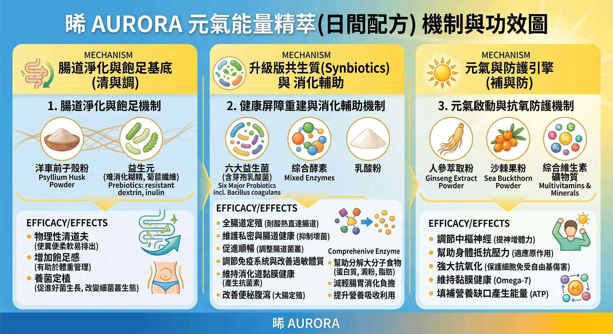
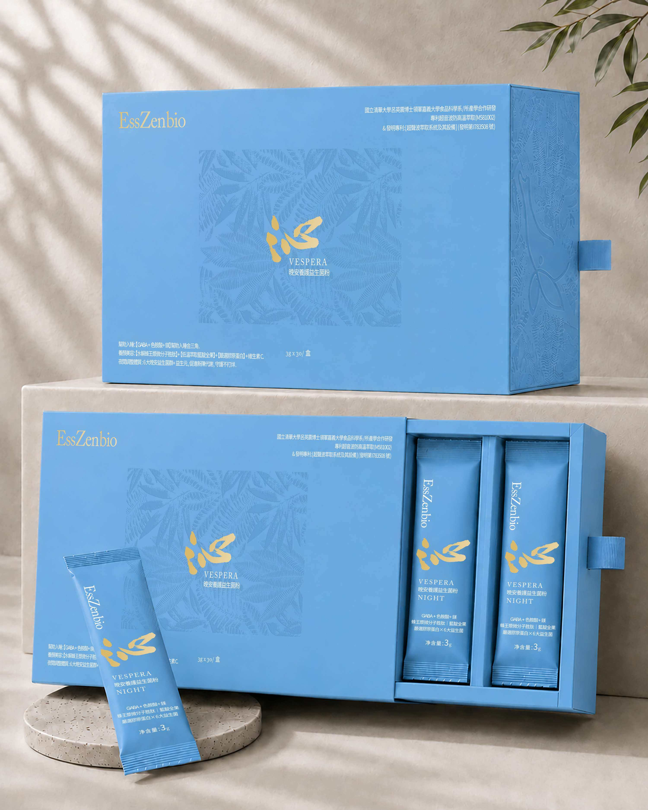
VESPERA 夜用配方則完美落實了「睡得好，自然美」的保健邏輯。利用GABA、色胺酸與鎂幫助入睡；並在夜間黃金休息期，透過水解蜂王乳、膠原蛋白與維生素C（具抗氧化作用、促進膠原蛋白的形成）進行養顏美容；最後以六大益生菌群與益生質幫助維持消化道機能。是一款兼具幫助入睡與青春美麗的高規格複合配方。
採用生物科技酵素剪裁技術，將蜂王漿溫和水解為「精純微分子胜肽」，保留能滋養好菌的珍貴寡糖，並精準鎖住王漿酸 (10-HDA)。搭配優質膠原蛋白，調節生理機能，養顏美容，展現青春好氣色。
嚴選高緯度極地珍貴果實藍靛果，完整封存豐沛的花青素(C3G)與植物多酚。結合「植萃益生」科學，多酚經腸道好菌發酵轉化，搭配足量維生素C，其中維生素C具抗氧化作用、促進膠原蛋白的形成，在夜間深層養護。
透過腸腦軸線的科學雙向溝通，高純度麩胺酸發酵物(含GABA)搭配人體必需胺基酸(色胺酸)與礦物質(鎂)。其中鎂有助於心臟、肌肉及神經的正常功能；配方完美協同運作，調節生理機能，幫助入睡，迎接晨起活力。
精選長雙歧桿菌(Bifidobacterium longum)、植物乳桿菌(Lactobacillus plantarum)等6大優勢活菌，結合前沿微生態科學概念。搭配優質益生元，夜間持續改變細菌叢生態，幫助維持消化道機能，隔日順暢輕盈。
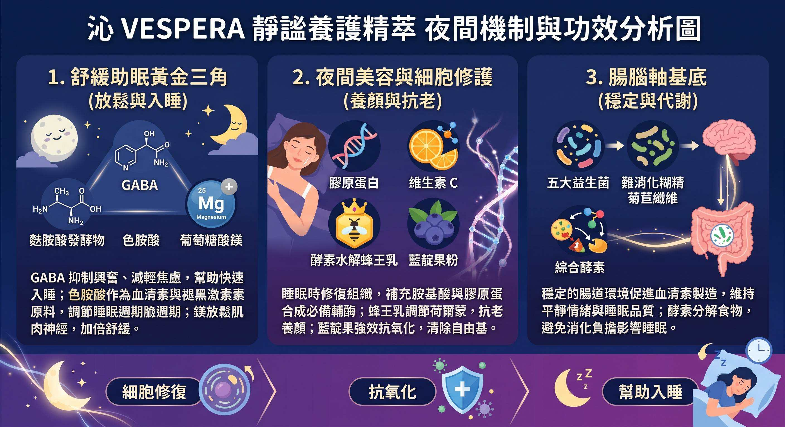
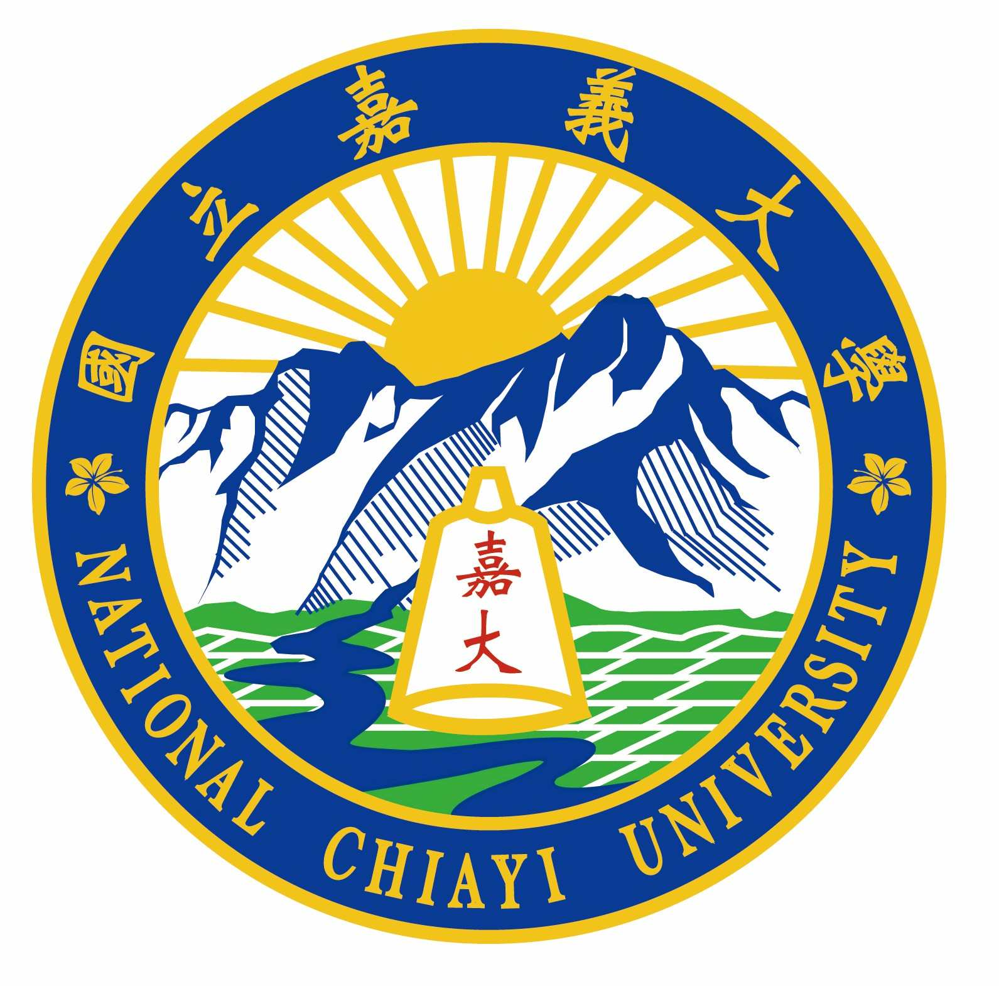
本系列產品結合前瞻微生態科學，其配方開發與低溫真空萃取製程技術，係由國立嘉義大學食品科學系 呂英震博士技術團隊進行產學合作研發。
呂博士專精於微生物學、發酵技術與益生菌篩選鑑定。
本產品透過嚴謹的學術研發流程，確保配方菌株之穩定性與生理調節潛力，為您的日夜健康維持提供最安心的科學把關。
🛡️ 核心萃取製程榮獲國家專利認證：「多槽串連式超音波防高溫萃取結構」 (專利證號：M581002)
& 發明專利：[超聲波萃取系統及其設備] (發明第 I 783508 號)
我們卓越的AI工程團隊以業界最高的隱私保護標準自建AI 檢測模型!
為因應 您所處環境因素 與 個人生理特質! 肌膚 , 及身體, 需要調整不同的保養策略, 來適應不同的狀態! 因此 我們結合產品配方特性, 以三維度的保養思維, 設計出 以AI 檢測為核心! 打造個人專屬的 [動態配方] , 完全滿足您 因時! 因地! 因個人特質的全方位呵護!
Formulation Matrix v4.86
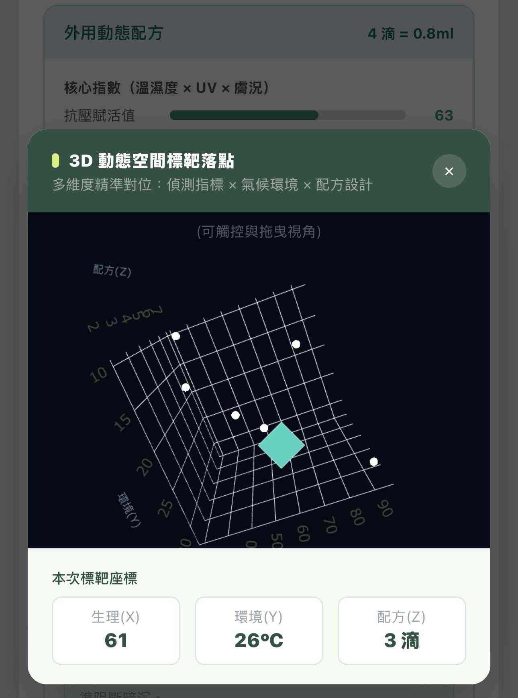
我們構建了三維度的保養思維模型：
生理 (X軸) × 環境 (Y軸) × 配方 (Z軸)。
系統會將擷取到的個人生理指數與氣候環境數據，投射於這個 3D 空間矩陣中，精準定位出「本次標靶座標」。藉由這個空間座標，為您演算出當下最適切的專屬動態配方滴數，達成真正的多維度精準對位。
在此! 為您 提供 [iOS / Android App]! 歡迎您! 掃描 以下二維碼 並下載App ! 開始體驗 這個為您打造的 智能管家服務!